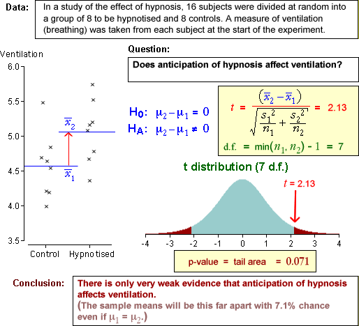

If you don't want to print now,
Inference
Statistical inference refers to statistical techniques for obtaining information about a population parameter (or parameters) from a random sample. There are two branches of inference:
Estimation
Point estimates and confidence intervals give answers to questions of the form:
What parameter values would be consistent with the sample data?
Hypothesis tests
This chapter deals with a related type of question:
Are the sample data consistent with some statement about the parameters?
Errors and strength of evidence
A single random sample can rarely provide enough information about a population parameter to allow us to be sure whether or not any statement (hypothesis) about that parameter will be true. The best we can hope for is an indication of the strength of the evidence against it.
Does a random sample have mean 520?
In an industrial process, some measurement, X, is normally distributed with standard deviation σ = 10. Its mean should be µ = 520 but can drift from this, so samples of n = 10 measurements are regularly collected as part of quality control.
If one such sample had mean 529, does the process need to be adjusted? The question can be reexpressed as:
If the underlying population mean was really µ = 520, what is the chance a sample of 10 values having a mean as far from 520 as 529?
Simulation
We can base our answer on the distribution of the sample mean, assuming that X has a normal distribution with µ = 520 and σ = 10. Simulations of 10 values from this distribution can be used to get an approximate distribution.
From the 200 simulated samples above, it seems very unlikely that a sample mean of 529 would have been recorded if the process meanhad been µ = 520. We therefore conclude that:
There is strong evidence that the process no longer has a mean of µ = 520 and needs to be adjusted.
A general framework
You may find it difficult to spot the common theme in the examples in this section, but they are all examples of hypothesis testing and fit into a common framework that is used for all hypothesis tests.
Data, model and question
We assess whether the null hypothesis is true by asking ...
Are the data consistent with the null hypothesis?
| p-value | Interpretation |
|---|---|
| over 0.1 | no evidence that the null hypothesis does not hold |
| between 0.05 and 0.1 | very weak evidence that the null hypothesis does not hold |
| between 0.01 and 0.05 | moderately strong evidence that the null hypothesis does not hold |
| under 0.01 | strong evidence that the null hypothesis does not hold |
Soccer league in one season
Proportion
Process mean
Comparison of groups
Correlation coefficient
Tests about numerical populations
The most important characteristic of a numerical population is usually its mean, µ. Hypothesis tests therefore usually question the value of this parameter.
Null and alternative hypotheses
Two-tailed tests about a population mean involve the hypotheses
H0 : μ = μ0
HA : μ ≠ μ0
where µ0 is the constant that we think may be the true mean.
In a one-tailed test, the alternative hypothesis involves only high (or low) values of µ, such as
H0 : μ = μ0
HA : μ > μ0
Test statistic if σ is unknown
In practical problems, the value of σ is rarely known so we cannot use

as a test statistic — it cannot be evaluated even when H0 is true. Instead, we must use a closely related type of 'statistical distance' between the sample mean and µ0,

where s is the sample standard deviation. This test statistic no longer has a normal distribution — it has greater spread due to the extra variability that results from estimating s, and has a standard distribution called a t distribution with (n - 1) degrees of freedom.

Finding a p-value from the t distribution
When testing the value of µ when σ is unknown, we use the test statistic

This has a t distribution (with n − 1 degrees of freedom) when H0 is true, so the p-value is found from a tail area of this distribution.
One-tailed test
H0 : μ = μ0
HA : μ < μ0
The steps for testing these hypotheses are shown in the diagram below.

Example
Consider a sample of n = 13 values with mean  = 16.14
and standard deviation s = 2.15. A test for whether the population mean
is more than 15.0 uses the hypotheses:
= 16.14
and standard deviation s = 2.15. A test for whether the population mean
is more than 15.0 uses the hypotheses:
H0 : µ = 15
HA : µ > 15
Since the population standard deviation, σ, is unknown, the test must be based on a t statistic.

Symmetric hypotheses
In some situations there is a kind of symmetry between two competing hypotheses. For example, if two candidates, A and B, stand in an election and π is the population proportion who will vote for A, we are interested in which candidate will win:
H1 : π > 0.5
H2 : π < 0.5
Null and alternative hypotheses
In statistical hypothesis testing, the two hypotheses are not treated symmetrically in this way. Instead, we ask whether the sample data are consistent with one particular hypothesis (the null hypothesis, denoted by H0). If the data are not consistent with H0, then we can conclude that the competing hypothesis (the alternative hypothesis, denoted by HA) must be true.
The two possibilities are:
We should never conclude that H0 is likely to be true.
Example
Consider a test for whether a population mean is zero:
H0 : µ = 0.0
HA : µ ≠ 0.0
Based on a random sample, we might conclude:
Describing the credibility of the null hypothesis
A p-value is a numerical description of the strength of the evidence against H0 that is provided by the data .
A p-value is a numerical summary statistic that describes the strength of the evidence against H0
P-values are interpreted in the same way for all hypothesis tests.
P-values and probability
When H0 holds,

On the other hand, when HA holds, p-values are more likely to be near zero and
Examples
Of course, we may be wrong. A p-value of 0.0023 could arise when either H0 or HA holds but it is more likely under HA. And a p-value of 0.4 could also arise when either hypothesis is true.
Interpretation of p-values for all tests
| p-value | Interpretation |
|---|---|
| over 0.1 | no evidence that the null hypothesis does not hold |
| between 0.05 and 0.1 | very weak evidence that the null hypothesis does not hold |
| between 0.01 and 0.05 | moderately strong evidence that the null hypothesis does not hold |
| under 0.01 | strong evidence that the null hypothesis does not hold |
Data from two groups
When data are collected from two groups, we are usually interested in differences between the groups in general. The specific individuals are of less interest. Questions are therefore about the characteristics of the populations or processes that we assume underlie the data.
Example

The questions do not refer to the 16 specific subjects — they ask about whether anticipation of hypnosis affects the ventilation rate in general. We would like to use the answers to predict what will happen to other people.
Data and model
Data from two groups can be displayed with two histograms:

The diagram below illustrates a possible model for the data above.

Testing for a difference between two means
The difference between two groups that is of most practical importance is a difference between their means.
H0 : μ2 − μ1 = 0
HA : μ2 − μ1 ≠ 0
The summary statistic that throws most light on these hypotheses is the difference
between the sample means,  .
Testing therefore involves assessment of whether this difference is unusually
far from zero.
.
Testing therefore involves assessment of whether this difference is unusually
far from zero.

As with all other hypothesis tests, a p-value near zero gives evidence that the null hypothesis does not hold — evidence of a difference between the group means.
Example

General properties of p-values
A statistical hypothesis test cannot provide a definitive answer about whether two groups have different means. The randomness of sample data means that p-values are also random quantities.
It is possible to get a small p-value (supporting HA) when H0 is true, and it is possible to get a large p-value (consistent with H0) when HA is true.
There is some chance of being misled by an 'unlucky sample.
Effect of increasing the sample size
One- and two-tailed tests for differences
In a two-tailed test, the alternative hypothesis is that the two population means are different. A one-tailed test arises when we want to test whether one mean is higher than the other (or lower than the other).

Test statistic, p-value and conclusion
Consider a test for the hypotheses,
H0 : μ1 = μ2
HA : μ1 > μ2
The alternative hypothesis is only supported by very small values of  .
This also corresponds to small values of the test statistic t ,
so the p-value is the lower tail probability of the t distribution.
.
This also corresponds to small values of the test statistic t ,
so the p-value is the lower tail probability of the t distribution.

A small p-value is interpreted as giving evidence that H0 is false, in a similar way to all other kinds of hypothesis test.
Examples

Properties of p-values
We again stress that a statistical hypothesis test cannot provide a definitive answer. The randomness of sample data means that p-values are also random quantities, so there is some chance of us being misled by an 'unlucky' sample: